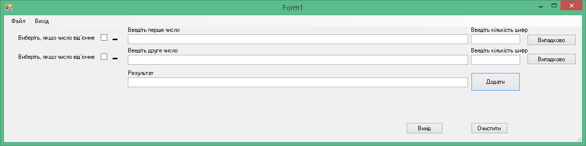
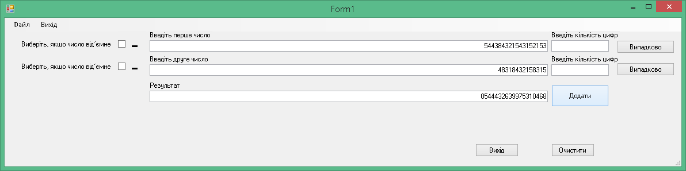
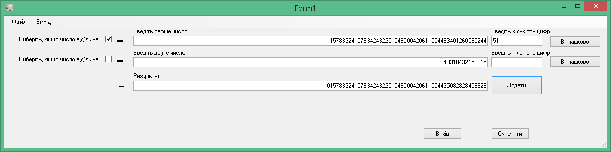
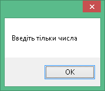
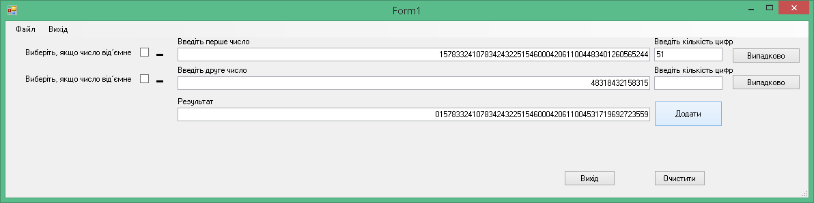
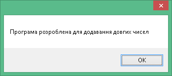

Після запуску відкриється основне вікно програми.

Основне вікно програми
Щоб почати роботу програми, введіть дані та натисніть кнопку «Додати».

Приклад введених даних
Для роботи з від’ємними числами встановіть прапорець навпроти числа. Якщо в результаті роботи програми вийшло від’ємне число, буде відображатися знак ‘-‘

Приклад введення від’ємних даних
Якщо ви щось неправильно ввели дані, програма повідомить вас про це спливаючим вікном.

Спливаюче вікно
Для заповнення числа випадковими цифрами введіть кількість цифр та натисніть кнопку «Випадково».

Заповнення випадковим чином
Щоб переглянути довідку про програму перейдіть у Файл – Про програму

Про програму
Щоб переглянути довідку про розробника перейдіть у Файл – Про розробника